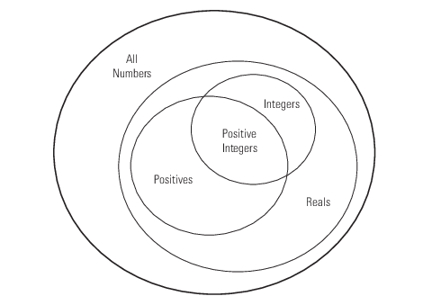

Role of Classes in MATLAB
Classes
In the MATLAB® language, every value is assigned to a class. For example, creating a variable with an assignment statement constructs a variable of the appropriate class:
a = 7; b = 'some text'; s.Name = 'Nancy'; s.Age = 64; whos
whos Name Size Bytes Class Attributes a 1x1 8 double b 1x9 18 char s 1x1 370 struct
Basic commands like whos display the class of each value in the workspace. This information helps MATLAB users recognize that some values are characters and display as text while other values are double precision numbers, and so on. Some variables can contain different classes of values like structures.
Predefined Classes
MATLAB defines fundamental classes that comprise the basic types used by the language. These classes include numeric, logical, char, cell, struct, and function handle.
User-Defined Classes
You can create your own MATLAB classes. For example, you could define a class to represent polynomials. This class could define the operations typically associated with MATLAB classes, like addition, subtraction, indexing, displaying in the command window, and so on. These operations would need to perform the equivalent of polynomial addition, polynomial subtraction, and so on. For example, when you add two polynomial objects:
p1 + p2
the plus operation must be able to add polynomial objects because the polynomial class defines this operation.
When you define a class, you can overload special MATLAB functions (such as plus.m for the addition operator). MATLAB calls these methods when users apply those operations to objects of your class.
See Representing Polynomials with Classes for an example that creates just such a class.
MATLAB Classes — Key Terms
MATLAB classes use the following words to describe different parts of a class definition and related concepts.
Class definition — Description of what is common to every instance of a class.
Properties — Data storage for class instances
Methods — Special functions that implement operations that are usually performed only on instances of the class
Events — Messages defined by classes and broadcast by class instances when some specific action occurs
Attributes — Values that modify the behavior of properties, methods, events, and classes
Listeners — Objects that respond to a specific event by executing a callback function when the event notice is broadcast
Objects — Instances of classes, which contain actual data values stored in the objects' properties
Subclasses — Classes that are derived from other classes and that inherit the methods, properties, and events from those classes (subclasses facilitate the reuse of code defined in the superclass from which they are derived).
Superclasses — Classes that are used as a basis for the creation of more specifically defined classes (that is, subclasses).
Namespaces — Folders that define a scope for class and function naming
Some Basic Relationships
This section discusses some of the basic concepts used by MATLAB classes.
Classes
A class is a definition that specifies certain characteristics that all instances of the class share. These characteristics are determined by the properties, methods, and events that define the class and the values of attributes that modify the behavior of each of these class components. Class definitions describe how objects of the class are created and destroyed, what data the objects contain, and how you can manipulate this data.
Class Hierarchies
It sometimes makes sense to define a new class in terms of existing classes. This approach enables you to reuse the designs and techniques in a new class that represents a similar entity. You accomplish this reuse by creating a subclass. A subclass defines objects that are a subset of those objects defined by the superclass. A subclass is more specific than its superclass and might add new properties, methods, and events to those components inherited from the superclass.
Mathematical sets can help illustrate the relationships among classes. In the following diagram, the set of Positive Integers is a subset of the set of Integers and a subset of Positives. All three sets are subsets of Reals, which is a subset of All Numbers.
The definition of Positive Integers requires the additional specification that members of the set be greater than zero. Positive Integers combine the definitions from both Integers and Positives. The resulting subset is more specific, and therefore more narrowly defined, than the supersets, but still shares all the characteristics that define the supersets.

The “is a” relationship is a good way to determine if it is appropriate to define a particular subset in terms of existing supersets. For example, each of the following statements makes senses:
A Positive Integer is an Integer
A Positive Integer is a Positive number
If the “is a” relationship holds, then it is likely you can define a new class from a class or classes that represent some more general case.
Reusing Solutions
Classes are usually organized into taxonomies to foster code reuse. For example, if you define a class to implement an interface to the serial port of a computer, it would probably be similar to a class designed to implement an interface to the parallel port. To reuse code, you could define a superclass that contains everything that is common to the two types of ports, and then derive subclasses from the superclass in which you implement only what is unique to each specific port. Then the subclasses would inherit all the common functionality from the superclass.
Objects
A class is like a template for the creation of a specific instance of the class. This instance or object contains actual data for a particular entity that is represented by the class. For example, an instance of a bank account class is an object that represents a specific bank account, with an actual account number and an actual balance. This object has built into it the ability to perform operations defined by the class, such as making deposits to and withdrawals from the account balance.
Objects are not just passive data containers. Objects actively manage the data contained by allowing only certain operations to be performed, by hiding data that does not need to be public, and by preventing external clients from misusing data by performing operations for which the object was not designed. Objects even control what happens when they are destroyed.
Encapsulating Information
An important aspect of objects is that you can write software that accesses the information stored in the object via its properties and methods without knowing anything about how that information is stored, or even whether it is stored or calculated when queried. The object isolates code that accesses the object from the internal implementation of methods and properties. You can define classes that hide both data and operations from any methods that are not part of the class. You can then implement whatever interface is most appropriate for the intended use.
References
[1] Shalloway, A., J. R. Trott, Design Patterns Explained A New Perspective on Object-Oriented Design.. Boston, MA: Addison-Wesley 2002.
[2] Gamma, E., R. Helm, R. Johnson, J. Vlissides, Design Patterns Elements of Reusable Object-Oriented Software. Boston, MA: Addison-Wesley 1995.
[3] Freeman, E., Bert Bates, Kathy Sierra, Elisabeth Robson, Head First Design Patterns. O'Reilly Media, 2004.